| 상품 | 군마트 | 쿠팡 | 차이 | |
|---|---|---|---|---|
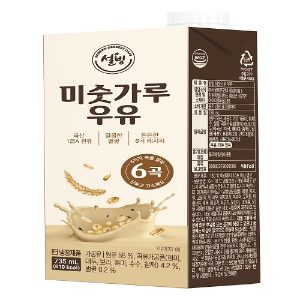 | 설빙 미숫가루 우유 735ml | 2,090원 | 5,490원 | -62% |
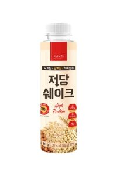 | 비엘에프씨 오트밀단백질식이섬유저당쉐이크 80g | 1,360원 | 2,300원 | -41% |
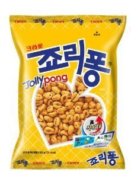 | 크라운제과 죠리퐁 165g | 1,190원 | 1,856원 | -36% |
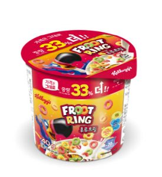 | 농심켈로그 후르트링 컵 40g | 950원 | 1,357원 | -30% |
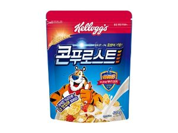 | 콘푸로스트 600g | 3,670원 | 5,050원 | -27% |
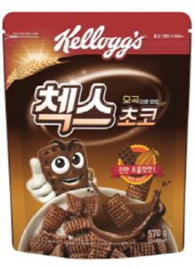 | 농심켈로그 오곡으로만든 첵스초코 570g | 4,470원 | 5,520원 | -19% |
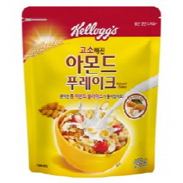 | 농심켈로그 아몬드푸레이크 600g | 4,960원 | 6,000원 | -17% |
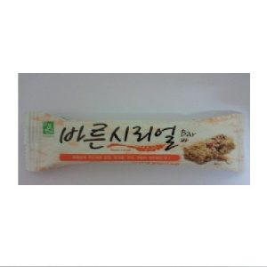 | 엄마사랑 바른시리얼바 30g | 760원 | 876원 | -13% |
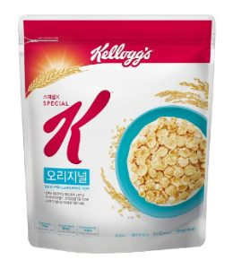 | 농심켈로그 스페셜k 오리지날 480g | 4,710원 | 5,280원 | -11% |
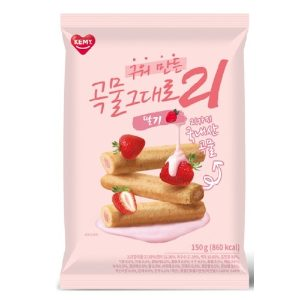 | 개미식품 구워만든곡물그대로21딸기 150g | 3,230원 | 3,225원 | +0% |
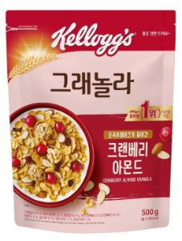 | 농심켈로그 크렌베리아몬드그래놀라 500g | 4,900원 | 4,629원 | +6% |
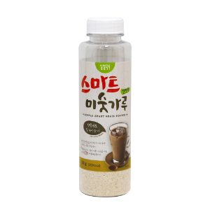 | 태광푸드 간편형스마트미숫가루 50g | 1,000원 | 917원 | +9% |
시리얼 말고 다른 것도
더 이상 직접 비교하지 마세요.
군마트 상품을 한곳에 모아 PX 가격과 온라인 가격을 쉽게 비교할 수 있습니다.
이게 실제 화면이에요. 상품을 누르면 바로 열립니다.
국방가족 분들이 조금이라도 편하게 군마트를 이용하셨으면 하는 마음으로 만들었습니다.
국방가족을 위한 작은 재능기부입니다.
원하는 상품을 검색해보세요!